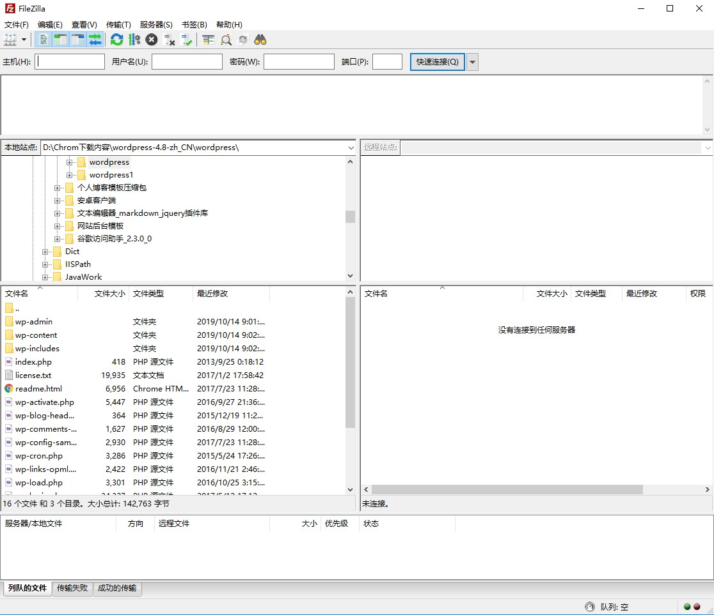
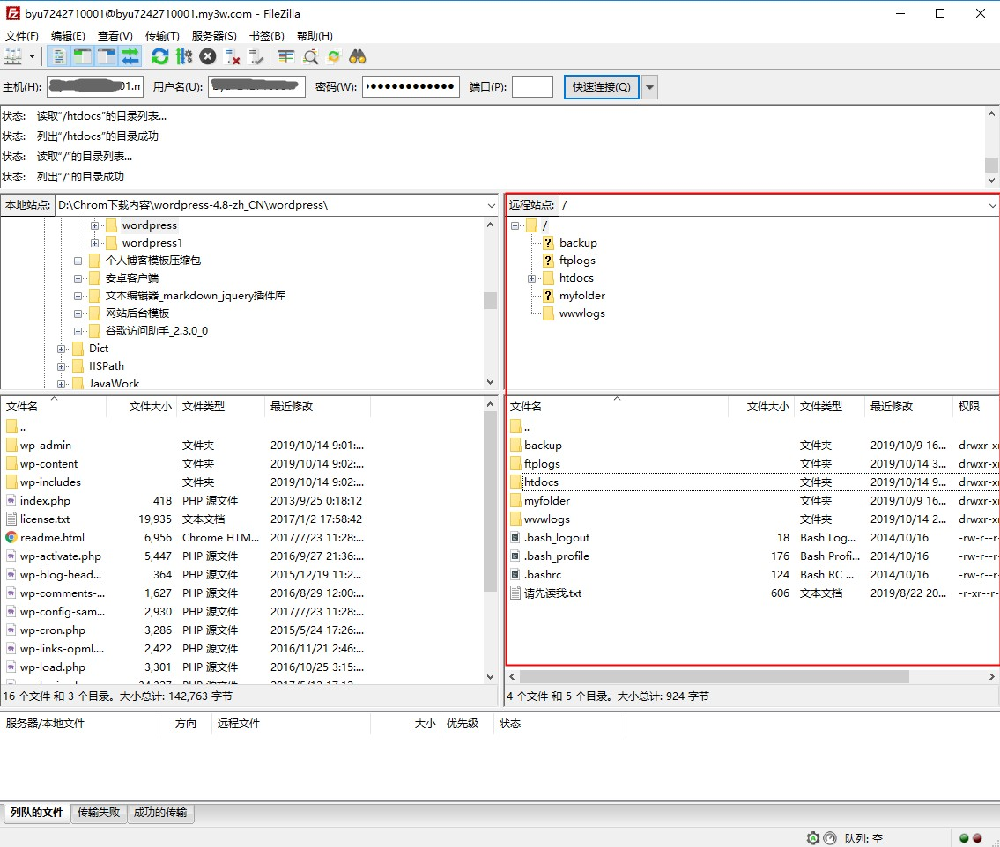
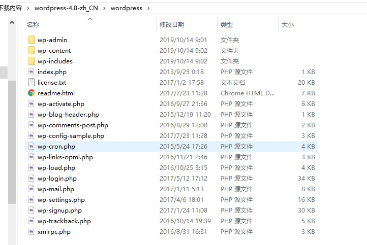
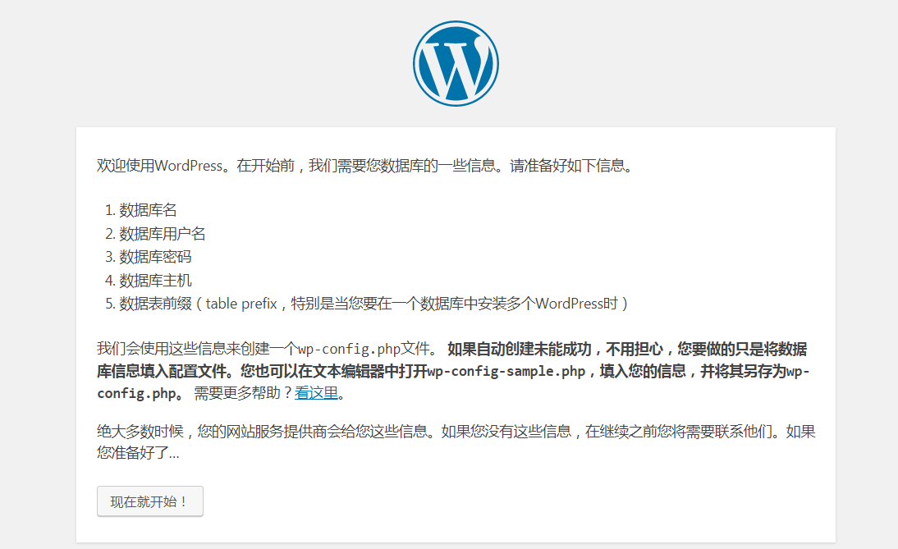
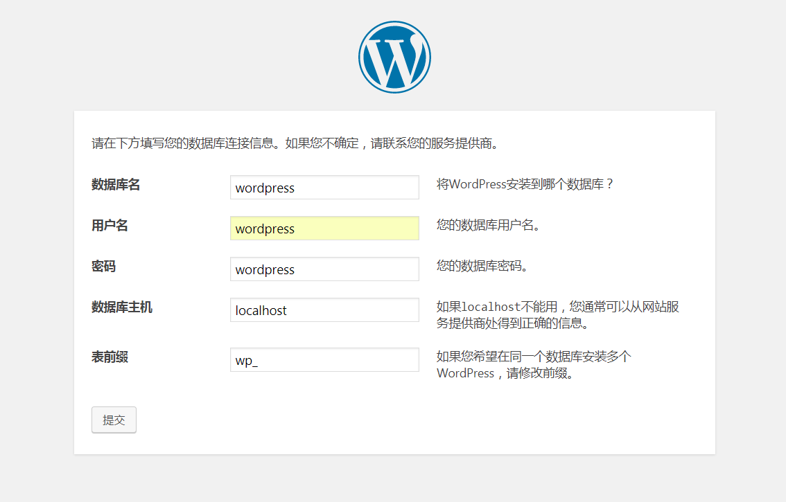
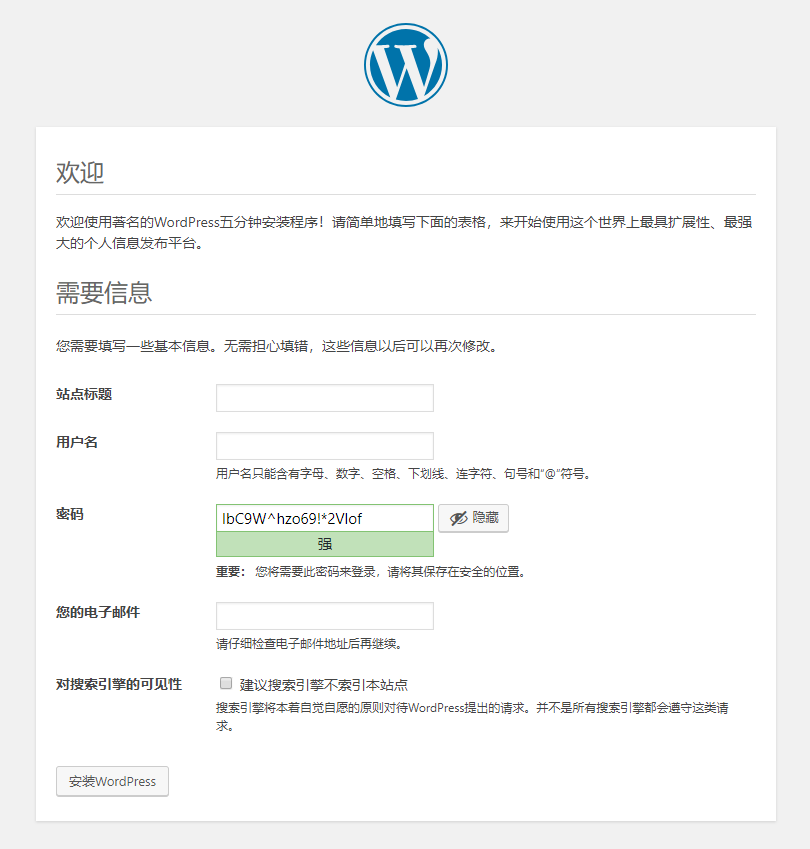
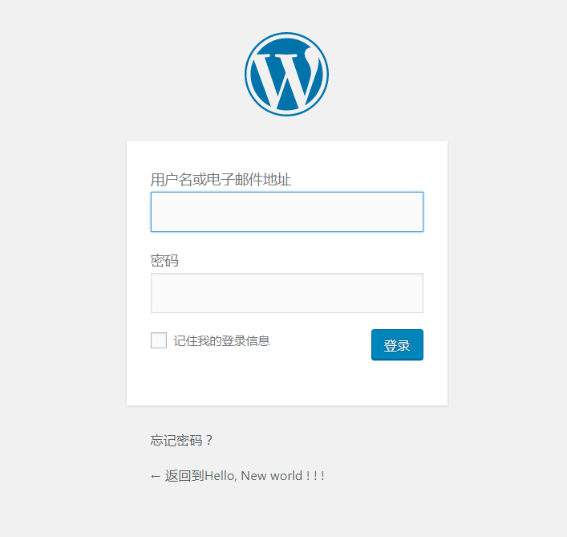
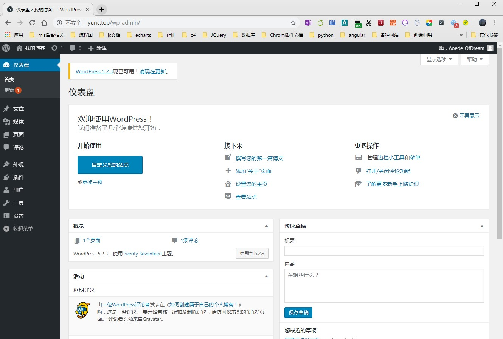

首先，我们需要一些创建博客必须的工具，如下：
1. 云虚拟主机+数据库。如果把创建网站比作盖房子的话，主机与数据库就相当于地基，是整个网站的基本，地基稳固，我们的房子才能更加健壮。主机我使用的是阿里云的虚拟主机，数据库在购买主机时就会附带。
2. 网站程序。程序就是这栋房子背后的设计中心。房间盖成什么样的结构，装修成什么样的风格，买什么样的家具，都是在这里设计的。网上的博客管理程序有很多，我这块用的是WordPress来管理网站。
3. 模板。模板就是用来美化房子的壁纸。
4. 域名。域名就相当于房子的地址，房子盖好了，装修好了，得让别人来参观呀。一个好的域名更容易让人记住你。域名我是在阿里云注册购买的。
下面来看看具体的步骤。
虚拟主机可以在阿里云购买，可以查看阿里云关于虚拟主机的文档，https://help.aliyun.com/product/35465.html?spm=a2c4g.750001.list.86.1fdd7b13KOlsDU。具体流程我就不赘述了。
需要注意的是，我们的网站程序使用的是WordPress，WordPress使用的是PHP和MySql，所以我们选择主机时，支持语言需要包括PHP，数据库需支持MySql。
主机购买完后，我们网站运行的环境就建好了，接下来注册一个域名访问我们的网站。
域名可以在阿里云注册，也可在新网，爱名网或其它IDC商购买注册。注册成功后，将域名备案，再与我们的主机进行绑定并解析。具体操作阿里云有详细的文档。https://help.aliyun.com/product/35473.html?spm=a2c4g.750001.list.85.1fdd7b13TbVoWW
由于域名备案需要等待一段时间，我们也可以临时使用虚拟主机自带的域名来访问我们的网站。
下载WordPress压缩包。我们先从WordPress官网下载最新版的WordPress。官网链接： https://cn.wordpress.org/download/ 。如果官网下载比较慢的话，可以点击 https://pan.baidu.com/s/1CRL2qF33ElJrkhShZUlU-g 下载。
上传WordPress到主机。 首先，我们需要连接到我们的主机服务器，进行远程文件管理。我使用的是FileZilla，阿里云官网也有具体的使用文档。如果没有下载可以点击 https://pan.baidu.com/s/1ne_DPD_OF2en24rlFwBIiw 直接下载安装。
下载安装完成FileZilla后，打开FileZilla会是这种界面：

依次填入FTP主机地址，用户名，密码，然后点击快速连接，连接到远程服务器。连接成功后服务器的文件就会显示到远程站点目录下，这样就可以将左侧本地站点的文件上传到右侧远程服务器了。如图：

接下来将本地的WordPress文件上传到远程服务器。
首先将下载完成的WordPress压缩包解压，打开文件后会发现目录结构如下：

我们需要的就是这些文件。把这些文件所在的目录地址复制下来，打开FileZilla粘贴到本地站点的地址栏中，就可以快速访问到这些文件，然后全选这些文件，右键点击上传，上传到服务器。
需要注意的是，如果你选择的主机是Linux系统，上传时不能直接将文件上传到根目录中，需要上传到htdocs这个文件下。否则将会上传失败，大家要注意这一点。
上传完成后，打开云虚拟主机的临时域名，输入主机密码登陆完成后，显示如下界面，说明文件上传成功，可以开始使用了。

现在我们来安装WordPress！
首先用浏览器访问你主机的临时域名，会出现安装界面，点击现在就开始！
点击填写你的数据库信息，数据库信息可以在云虚拟主机站点管理中查看，依次填写即可。

填写站点名称跟后台管理员账号密码等信息，点击安装！

安装成功，就可以登陆后台管理你的博客了，后台登录地址为：你的网址/wp-login.php

登录成功后，博客的管理界面是这样的：

至此我们的博客搭建完成，我们就可以开始写我们的博客了。
更多内容可访问我的博客：http://www.yunc.top/